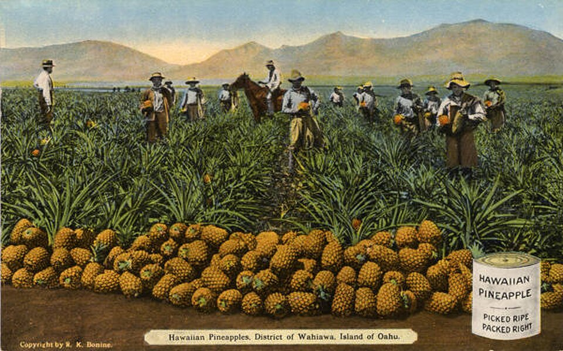

California Avenue
Place: California Avenue, Wahiawā, Oʻahu
Type: Major transportation corridor
Namesake: California, where many of the original Wahiawā Colony settlers came from
Story it tells: How a group of California fruit growers started an agricultural settlement in 1898, leaving behind street names that remind us of where they came from and what they hoped to grow.

California Avenue, one of the main roads running through Wahiawā, takes its name from a group of fruit growers who came to Hawaiʻi from California in the late nineteenth century. Under the Republic of Hawaiʻi's Land Act of 1895, the Wahiawā Settlement Association acquired roughly 1,300 acres in central Oʻahu. Led by horticulturist Byron O. Clark, the settlers began arriving in 1898, establishing what became known as the Wahiawā Colony, or California Colony. Much of the surrounding land had been used for cattle grazing, though the plateau had a much longer history in Hawaiian culture, including nearby Kūkaniloko, the sacred royal birthing site. The settlers hoped to establish a community centered around the cultivation of fruit.
As the settlers laid out their new community, they named its main thoroughfare California Avenue in honor of their former home. The surrounding streets also reflected the identity of the colony. Names such as Olive, Avocado, Mango, Plum, and Peach reflected their agricultural ambitions, while Clark, Kellogg, Eames, and Thomas commemorated individual settlers. California Avenue was originally an unpaved road running through the red soil of central Oʻahu. About 145 acres were placed into a trust in 1902 to accommodate the development of a town center.
While the settlers experimented with a variety of crops, it was the pineapple that would ultimately write Wahiawā's contemporary story. James Dole arrived in the community in 1900 and helped establish an industry that would become synonymous with Hawaiʻi. The establishment of nearby Schofield Barracks in 1909 brought another major source of economic activity to the area. As the population grew, California Avenue evolved from a rural dirt road into a commercial corridor lined with businesses serving agricultural workers, military personnel, and their families. Schools, churches, shops, parks, and other community facilities developed along the avenue over time.
A drive through Wahiawā offers a glimpse into the plans of a small group of fruit growers who arrived more than a century ago. California Avenue tells us where they came from, the surrounding fruit-themed streets tell us what they hoped to grow, and the streets named for individual settlers remind us of the people behind the experiment. Together, they preserve a chapter of Wahiawā's history that might otherwise go unnoticed by those driving past and enjoying the scenery.